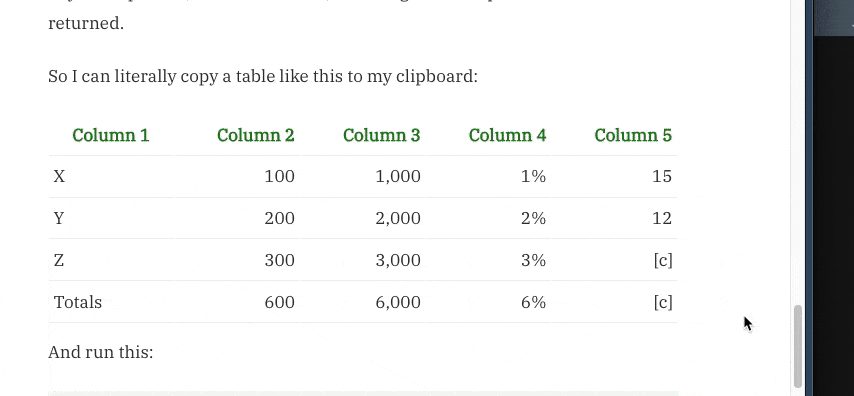

install.packages("remotes") # if not yet installed
remotes::install_github("matt-dray/wordup")
library(wordup)
tl;dr
I made a function that shouldn’t need to exist in an ideal world: it takes a copied Microsoft Word table and outputs a Markdown version (well, a Govspeak version).
Govspeak when you’re spoken to
I’ve written about three painful things recently:
- Forcing data scientists to expose their tools so we can all use and learn from them.
- ‘Rectangularising’ tables scraped out of a Word document via the {officer} package.
- Easier ways to coerce dataframe columns to their ‘intended’ data type.
Today I bring you a terrible Cerberus with these three heads1.
The challenge: sometimes public sector statisticians produce Word documents that need to be converted to a special type of simplified plaintext Markdown, called Govspeak, before they can be uploaded for publication as HTML files on GOV.UK2.
This is fine: we have specific publishing specialists who can take care of it. It can be a little tedious, however. What if we could speed up and make more efficient the process of converting from Word to Govspeak?
There’s a specific Govspeak converter online that you can paste into. But it doesn’t have full coverage of the things that might appear in a Word doc, including tables. Other online converters exist, but I don’t think we should rely on third parties that are probably intended for producing general Markdown rather than Govspeak, specifically
Markdown? Word up.
I’ve started an R package called {wordup} that aims to take a Word document and convert it to Govspeak. It’s early days in the sense that it doesn’t yet do, well… very much. But I thought the package name was funny (if unoriginal) and worth squatting. Maybe I’ll never get around to developing it, who knows.
To install (which is really not worth it right now, unless you want to raise an issue or pull request):
For now, the principle is that you can unzip a Word document to expose a bunch of xml files (yet another thing I’ve been writing about recently, lol) that contain all the information needed to build the Word document3. As such, you can read that xml and extract all the information, styles, etc, and massage it programmatically into Govspeak format.
Part of the process will involve taking a Word table, specifically, and converting it to a Govspeak-friendly form. I figured this might be a nice standalone tool in its itself, so I had a stab at what it could look like.
Fantabulars
So right now the wordup::table_to_govspeak() function (whose name could change at any time) does three things:
- Handles inputs.
- Guesses data types.
- Applies extra styles.
You can either (a) copy-paste a Word table into the function, or (b) simply copy it to the clipboard, where it can be read by the function using the {clipr} package. The function will take the string—which is basically tabs (\t) to indicate gaps between cells and newlines (\n) to indicate rows—and reorient it initially into a dataframe.
Of course, all the columns will be character-class at this point. We can immediately run type.convert() over the whole dataframe to coerce each column to a more appropriate data type, if appropriate. So a character column composed of c("10", "20", "30) will become a numeric column of values c(10, 20, 30). But this doesn’t work for numeric values that have symbols in them, like commas as thousands separators (1,200), per cent symbols (82%) and placeholder markers to indicate things like suppressed values ([c])4. To get around this, we can strip the nuisance characters and then see if what remains looks like a number.
Finally, there’s some specific features of Govspeak tables that need attention. It’s acceptable to have row labels, where each value in every cell of the first column should be prefaced with an octothorpe (#), and totals columns, where the entire row should be emboldened with double-asterisks (**) either side of the cells’ values.
What results can be sort of… magic really. You copy a Word table in its entirety to your clipboard, run the function, and bang: the Govspeak Markdown is returned. You can see this in action in the gif at the top of this page.
So I can literally copy a table like this to my clipboard:
| Column 1 | Column 2 | Column 3 | Column 4 | Column 5 |
|---|---|---|---|---|
| X | 100 | 1,000 | 1% | 15 |
| Y | 200 | 2,000 | 2% | 12 |
| Z | 300 | 3,000 | 3% | [c] |
| Totals | 600 | 6,000 | 6% | [c] |
And run this:
wordup::table_to_govspeak()To print this (and have it copied to your clipboard as the message says):
| Column 1 | Column 2 | Column 3 | Column 4 | Column 5 |
| ------- | ------: | ------: | ------: | ------: |
| X | 100 | 1,000 | 1% | 15 |
| Y | 200 | 2,000 | 2% | 12 |
| Z | 300 | 3,000 | 3% | [c] |
| Totals | 600 | 6,000 | 6% | [c] |
The output table has been written to the clipboard.Boom. Note the crucial feature that the third, fourth and fifth columns are recognised as numeric—despite containing the strings ,, % and [c]—and therefore right-aligned (------:). This is entirely due to the argument ignore_regex, which defaults to removing commas, percentage symbols or anything in square brackets before it guesses what data type the column is5.
And we can do fancy things like:
wordup::table_to_govspeak(
has_row_titles = TRUE,
totals_rows = 4L
)Which outputs this thing:
| Column 1 | Column 2 | Column 3 | Column 4 | Column 5 |
| ------- | ------: | ------: | ------: | ------: |
| # X | 100 | 1,000 | 1% | 15 |
| # Y | 200 | 2,000 | 2% | 12 |
| # Z | 300 | 3,000 | 3% | [c] |
| # **Totals** | **600** | **6,000** | **6%** | **[c]** |
The output table has been written to the clipboard.Of course, in practice this might get a little more complicated if you need to manually specify in the function declaration that there’s a column of row titles or some totals rows. Pish-posh. The point is that I think this is probably better than trying to (a) write the Govspeak table by hand or (b) trying to use the Govspeak converter, which just doesn’t work for this task. This also has mild, opinionated, Govspeak-related benefits over using a straightforward knitr::kable().
Is this perfect? Ahaha, no. There’s a lot to add or improve, but I think this is a decent start and solves a (niche) problem for now6.
Environment
Session info
Last rendered: 2023-07-04 09:56:28 BSTR version 4.3.1 (2023-06-16)
Platform: aarch64-apple-darwin20 (64-bit)
Running under: macOS Ventura 13.2.1
Matrix products: default
BLAS: /Library/Frameworks/R.framework/Versions/4.3-arm64/Resources/lib/libRblas.0.dylib
LAPACK: /Library/Frameworks/R.framework/Versions/4.3-arm64/Resources/lib/libRlapack.dylib; LAPACK version 3.11.0
locale:
[1] en_US.UTF-8/en_US.UTF-8/en_US.UTF-8/C/en_US.UTF-8/en_US.UTF-8
time zone: Europe/London
tzcode source: internal
attached base packages:
[1] stats graphics grDevices utils datasets methods base
other attached packages:
[1] wordup_0.0.0.9000
loaded via a namespace (and not attached):
[1] htmlwidgets_1.6.2 compiler_4.3.1 fastmap_1.1.1 cli_3.6.1
[5] tools_4.3.1 htmltools_0.5.5 rstudioapi_0.14 yaml_2.3.7
[9] rmarkdown_2.22 knitr_1.43.1 jsonlite_1.8.7 xfun_0.39
[13] digest_0.6.31 rlang_1.1.1 evaluate_0.21 Reuse
CC BY-NC-SA 4.0